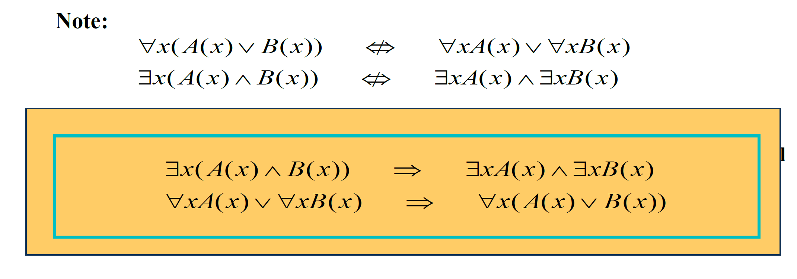
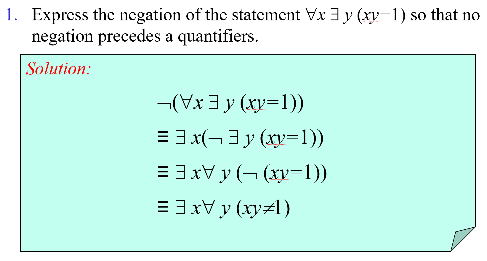
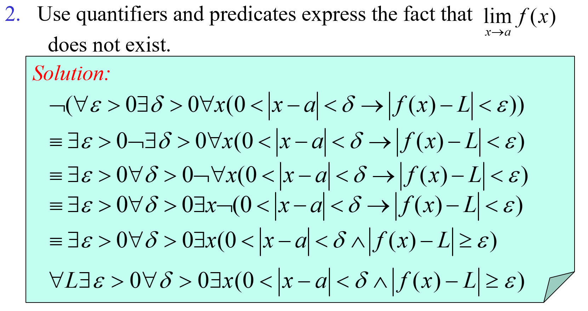

Part 02
Covering1.4 ~ 1.5
Predicate Logic 谓词逻辑
Predicate and Quantifiers 谓词和量词的概念
Predicate 谓词
A predicate (propositional function 命题函数) is a statement that contains variables.
Once the values of the variables are specified, the function has a truth value.
$P(x_1,x_2,...,x_n)$ n-place (n-ary) predicate n位谓词（n元谓词）
Quantifiers 量词
We need quantifiersto express the meaning of English words including all and some.
Universal Quantifier 全称量词
"For all"
∀
∀x P(x) is read as "For all x, P(x)" or "For every x, P(x)"
The universal quantification of P(x) create a proposition from a propositional function.
Existential Quantifier 存在量词
"There exists"
∃
∃x P(x) is read as "For some x, P(x)", or as "There is an xsuch that P(x)", or "For at least one x, P(x)."
Properties of Quantifiers 量词性质
| Statement | When true? | When false? |
|---|---|---|
| $\forall x P(x)$ | P(x) is true for every x. | There is an x for which P(x) is false. |
| $\exists x P(x)$ | There is an x for which P(x) is true. | P(x) is false for every x. |
Thinking about Quantifiers 深入理解量词
Loop 循环
When the domain of discourse is finite, we can think of quantification as looping through the elements of the domain.
To evaluate ∀x P(x) loop through all x in the domain
If at every step P(x) is true, then ∀x P(x) is true
If at a step P(x) is false, then ∀x P(x) is false and the loop terminates
To evaluate ∃x P(x) loop through all xin the domain
If at some step, P(x) is true, then ∃x P(x) is true and the loop terminates
- If the loop ends without finding an xfor which P(x) is true, then ∃x P(x) is false
Even if the domains are infinite, we can still think of the quantifiers this fashion, but the loops will not terminate in some cases.
Conjunctions and Disjunctions 合取、析取
If the domain is finite, a universally quantified proposition is equivalent to a conjunction of propositions without quantifiers and an existentially quantified proposition is equivalent to a disjunction of propositions without quantifiers.
If U consists of the integers 1,2, and 3
$\forall x P(x)\equiv P(1)\wedge P(2)\wedge P(3)$
$\exists x P(x)\equiv P(1)\vee P(2)\vee P(3)$
Even if the domains are infinite, you can still think of the quantifiers in this fashion, but the equivalent expressions without quantifiers will be infinitely long.
Other Quantifiers 其他量词
Uniqueness quantifier 唯一性量词
$\exists!$ or $\exists_1$
∃!x P(x) means that P(x) is true for one and only one x in the universe of discourse.
Precedence of Quantifiers 量词优先级
The quantifiers ∀and ∃have higher precedence than all the logical operators.
Binding Variables 量词绑定
Bound Variable 约束的量词
a variable is bound if it is known or quantified.
Free Variable 自由的量词
a variable neither quantified nor specified with a value
All the variables that occur in a propositional function must be bound or set equal to a particular value to turn it into a proposition.
In the statement ∃x(x + y = 1), the variable x is bound by the existential quantification ∃x, but the variable y is free because it is not bound by a quantifier and no value is assigned to this variable. This illustrates that in the statement ∃x(x + y = 1), x is bound, but y is free.
However, this statement is not a proposition since y is undefined and we can't tell whether it is true or false.
Logical Equivalences Involving Quantifiers 涉及量词的逻辑等价式
Statements involving predicates and quantifiers are logically equivalent iff they have the same truth
x is not occuring in P
- 量词辖域的扩张
$\forall xP(x)\vee A\equiv\forall x(P(x)\vee A)$
$\forall xP(x)\wedge A\equiv\forall x(P(x)\wedge A)$
$\exists xP(x)\vee A\equiv\exists x(P(x)\vee A)$
$\exists xP(x)\wedge A\equiv\exists x(P(x)\wedge A)$
- 量词辖域的收缩
$\forall x(A\to P(x))\equiv A\to\forall xP(x)$
$\exists x(A\to P(x))\equiv A\to\exists xP(x)$
（下面的两个式子很重要）
$\forall x(P(x)\to A)\equiv\exists xP(x)\to A$
$\exists x(P(x)\to A)\equiv\forall xP(x)\to A$
Negating Quantified Expressions 量化表达式的否定
De Morgan’s Laws for Quantifiers 量词的德·摩根律
$\neg\forall xP(x)\equiv\exists x\neg P(x)$
$\neg\exists xP(x)\exists\forall x\neg P(x)$
| Negation | Equivalent Statement | When is Negation True? | When False? |
|---|---|---|---|
| $\neg\exists x P(x)$ | $\forall x\neg P(x)$ | P(x) is false for every x | There is an x for which P(x) is true |
| $\neg\forall x P(x)$ | $\exists x\neg P(x)$ | There is an x for which P(x) is false | P(x) is true for every x |

Translating from English into Logical Expressions
The very first step is to decide on the domain U.
Translate the following sentence into predicate logic “Every student in this class has taken a course in Java.”
First decide on the domain U.
Solution 1 If U is all students in this class, define a propositional function J(x) denoting “x has taken a course in Java” and translate as ∀x J(x).
Solution 2 But if U is all people, also define a propositional function S(x) denoting “x is a student in this class” and translate as ∀x (S(x)→ J(x)).
A Very Important Notice!!!
Every student in this class has taken a course in Java
if U is all people, also define a propositional function S(x) denoting “x is a student in this class”
$\forall x(S(x)\wedge J(x))$ is not correct!!!
if there is one x that does not belong to this class, then the whole statement is false!
Some student in this class has taken a course in Java
if U is all people
$\exists x(S(x)\to J(x))$ is not correct!!!
if there is one x that does not brlong to this class, the the whole statement is true!
Premises and Conclusion 前提和结论
Lewis Carroll Example
An argument
- “All lions are fierce.”
- “Some lions do not drink coffee.”
- “Some fierce creatures do not drink coffee.”
The first two are called premises（前提） and the third is called the conclusion（结论）.The entire set is called an argument（论证）.
One way to translate these statements to predicate logic
Let p(x), q(x), and r(x) be the propositional functions “xis a lion,” “xis fierce,” and “xdrinks coffee,” respectively. Domain of x: All creatures.
- ∀x (p(x)→ q(x))
- ∃x (p(x) ∧¬r(x))
- ∃x (q(x) ∧¬r(x))
Later we will see how to prove that the conclusion follows from the premises.
Nested Quantifiers 嵌套量词
Definition 定义
Two quantifiers are nested if one is within the scope of the other.
e.g. $\forall x\exists yC(x,y)$
Translating from Nested Quantifiers into English
Translate the statement $\forall x(C(x)\wedge \exists y(C(y)\wedge F(x,y)))$ into English, where C(x) is "x has a computer," F(x,y) is "x and y are friends," and the domain for both x and y consists of all students at ZJU.
Solution
Use variables in the translatint result (Easy and clear)
For every student x at ZJU, x has a computer or there is a student y such that y has a computer and x and y are friends.
Understand the meaning and report it in English
Every student at ZJU has a computer or has a friend who has a computer.
Translating English into Logical Expressions Involving Nested Quantifiers
Express the statement “Everyone has exactly one best friend” as a logical expression with a domain consisting of all people
Solution
Rewrite the original statement as For every person x , x has exactly one best friend.
There is a person y who is the best friend of x, and furthermore, that for every person z, if z is not y, then z is not the best friend of x.
Let B(x, y) be the statement y is the best friend of x.
$\forall x\exists y\forall z(B(x,y)\wedge((z≠y)\to\neg B(x,z)))$
The Order of Quantifiers 量词顺序
The order of nested quantifiers matters if quantifiers are of different types
e.g.
$\forall x\forall yP(x,y)\equiv\forall y\forall xP(x,y)$
However
$\exists x\forall yP(x,y)$ is not the same as $\forall y\exists xP(x,y)$
Explanation
Assume P(x,y) denote "x loves y", where the domain for variables x and y consists of all people
$\exists x\forall yP(x,y)$ --> There is someone who loves everyone.
$\forall y\exists xP(x,y)$ --> Everybodyi s loved by somebody.
Negating Nested Quantifiers 嵌套量词的否定
Negating nested quantifiers by successively applying the rules for negating statements involving a single quantifier
e.g.


Quantifications of Two Variables 两个变量的量化式
| Statement | When True? | When False? |
|---|---|---|
| $\forall x\forall yP(x, y)\\forall y\forall xP(x, y)$ | P(x, y) is true for every pair x, y. | There is a pair x, y for which P(x, y) is false. |
| $\forall x\exists yP(x, y)$ | For every x there is a y for which P(x, y) is true. | There is an x such that P(x, y) is false for every y. |
| $\exists x\forall yP(x, y)$ | There is an x for which P(x, y) is true for every y. | For every x there is a y for which P(x, y) is false. |
| $\exists x\exists yP(x, y)\\exists y\exists xP(x, y)$ | There is a pair x, y for which P(x, y) is true. | P(x, y) is false for every pair x, y. |